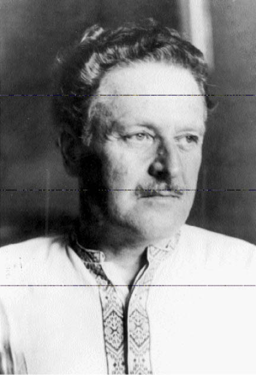
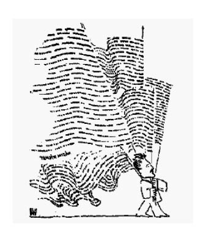
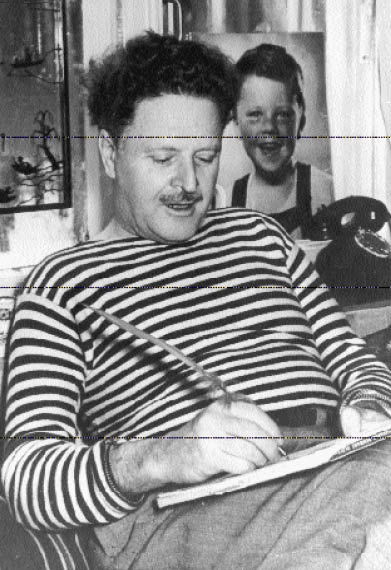

1913-1925 DÖNEMİ
Nâzım Hikmet’in ilk şiir kitapları Güneşi İçenlerin Türküsü 1928’de Bakü’de, 8-35 Satır 1929’da İstanbul’da yayımlanır. Fakat onlardan önce dergilerle gazetelerde birçok şiiri basılır. Birçok şiiri ise yıllarca sonra gün ışığına çıkar. 1923-1925 döneminde yazılmış bütün bu ürünlere “İlk Şiirler” adı verilir.
İLK ŞİİRLER
“İlk Şiirler” değişik özellikte örneklerden oluşmaktadır. Ama biçimce iki ana kümeye ayrılabilirler: Eski biçimli olanlar, yeni biçimli olanlar.
ESKİ BİÇİMLİ ŞİİRLER
Bunlar, Nâzım Hikmet’in devrimci dünya görüşüne bağlanmadan önce verdiği ürünlerdir. 1913-1922 yılları arasında yazılmışlardır. İçlerinden bir bölüğü Ekber Babayef’in Nâzım Hikmet-Bütün Eserleri69 adlı derlemesinde bulunmaktadır. Aynı şiirler Dost Yayınlarınca da basılmıştır.70Kerim Sadi 1969’da Nâzım Hikmet’in İlk Şiirleri’ni bir araya getirmiştir.71Bu eleştirili kitap o zamana değin “yayımlanmış” ilk şiirlerin tümünü kucaklamaktadır. Fakat ondan sonra da Aydın Aydemir, Nâzım Hikmet’in “basılmamış” ilk şiirlerini yayımlamıştır.72Bunları, Şerif Hulûsi ile Asım Bezirci’nin Nâzım Hikmet-Tüm Eserleri, I73 dizisinde yer alan başka şiirler izlemiştir. Daha sonra, Asım Bezirci araştırıp bulduğu ve yeniden sıraya koyduğu öbür şiirlerle bunların hepsini Nâzım Hikmet-İlk Şiirler 74adlı kitapta bir araya toplamıştır.
Bundan ötürü, eski biçimli ilk şiirleri de iki bölümde incelemek gerekmektedir.

a) Yayımlanmamış Şiirler
Nâzım Hikmet 1913-1920 yıllarında yani 11-18 yaşlarında yazdığı ilk şiirleri on ayrı defterde toplamıştır. İçlerinden bir bölüğünü sağlığında dergi ve gazetelerde çıkarmış, geri kalanını yayımlama gereğini duymamıştır. Bu şiirlerin sayısı yetmişi aşmaktadır. Herhalde şair yayımlamaya değer bulmamış, birer deneme saymıştır onları. Ne var ki, öyle de olsalar, Nâzım Hikmet’in evrim çizgisini belirlemek için kısaca onların da üzerinde durmak gerekmektedir.
Gerçekten de bu şiirlerden deneme sınırını aşanlar pek az. Ama dil o çağa göre temiz. Şairin geniş hayali, aşırı duyarlığı hemen dikkati çekiyor. Dizeler çoğunca koyu bir romantizmle yoğrulmuş.
Önce de açıklamıştım: Nâzım Hikmet’in ilk şiiri 20 Haziran 1329 (3 Haziran 1913) tarihinde yazdığı “Feryâd-ı Vatan”dır. Başlığından da anlaşılacağı üzere, ülkenin o yıllarda içine düştüğü acıklı durumu yansıtmaktadır. Şair daha ilk denemesinde yaralanmış yurdunun iniltisini duyarak üzülmekte, onun kurtulması için çevresine seslenmektedir. Şiirde Tevfik Fikret’ten bazı esintiler sezilmektedir. Özellikle baştan şu üç dize:
Sisli bir sabahtı henüz
Etrafı sarmıştı bir duman
Uzaktan geldi bir ses ah aman aman!
Fikret’in ünlü “Sis” şiirini çağrıştırmaktadır:
Sarmış yine âfâkını bir dûd-ı muannid
Bir zulmet-i beyzâ ki peyâpey mütezayid
“Sis”te olduğu gibi “Feryâd-ı Vatan”da da ülkenin içine düştüğü acıklı durum ile ondan duyulan üzüntü belirtilmektedir.
Söz konusu esinti “Yangın” şiirinde biraz daha belirgindir. Nitekim, şiirin
Valdeler haneler yetimler
Semaya kalkmış istimdâd eden eller
Valdesiz pedersiz kalmış masûmlar
dizelerinde geçen sözcükler, Fikret’in öteden beri kullandığı sözcüklerdir. Herhalde bunda –şairin de kısaca değindiği gibi– Fikret’ten yanında yüksek sesle şiirler okuyan babasının da etkisi olmuştur.
“Feryâd-ı Vatan” Balkan Savaşı’nda Osmanlıların yenilmesi ve düşmanların Çatalca’ya kadar ilerlemesi üzerine yazılmıştır. Bir yandan ‘bağrı parçalanan vatan’ın durumunu yansıtırken, bir yandan da onun birleştirilmesi/kurtarılması umut ve isteğini dile getirmektedir. Baştanbaşa yurt sevgisi ve sorumluluk duygusuyla yoğrulmuştur.
(Nâzım Hikmet’in on bir yaşındayken yazdığı ilk denemesinde ortaya çıkan bu “umut, istek, sevgi ve sorumluluk” ölünceye değin sürer ve şiirinin temel çizgilerinden birkaçını oluşturur.)
“Feryâd-ı Vatan”ı izleyen ve 1913-1915 yılları arasında kaleme alınan “Olma Mağlûp, Vatana, Irkıma, Çelik, İntikam” gibi ürünlerle de aynı duygu ve düşünceler işlenmektedir. Dizelerde Mehmet Emin’in ve dolayısıyla Türkçülük akımının da etkileri görülmektedir:

Ey zavallı vatanım
Neden böyle ağlıyor
Neden midir, çünkü ona
Evlâtları bakmıyor
(...)
Eskiden Türk ırkı “Avrupa’yı titretiyor”muş, Batı “cehl içinde yüzerken” o, büyük “âlimlere malik”miş, şimdiyse “vatanın bağrı parçalanmış”, “camilerine haç asılmış”.
Bundan ötürü,
(...)
Hep inliyor semâlar
İntikamımı alın diye
Bağırıyor Rumeli
Sen ey ulu neslin evlâdı
Bu feryâda susacaksın öyle mi?
Yukardaki birkaç dizeden de anlaşılacağı gibi, Nâzım Hikmet’in başlangıç şiirleri acemiliklerle dolu. Uyaklar zayıf, ölçüler bozuk. Bunu da doğal karşılamak gerek, çünkü şair henüz çocuk denecek bir yaştadır. Öyleyken, onda aşırı bir yurt sevgisi, sorumluluk duygusu ve savaşım isteği vardır. Yaşamı boyunca sürecek olan bu özellikler Çanakkale’de yiğitçe çarpışarak ölen dayısı Mehmet Ali için yazdığı şiirlerde de görülür. “Şehit Dayım, Benim Dayım, Şehit Dayıma Mabaat” başlıklı ürünlerde intikam, kahramanlık ve milliyetçilik duyguları dile getirilir. “Mehmet Çavuşa” aynı duyguları pekiştirir, Türklerin yine güçleneceği, “tarihe yine altın sayfalar yazacağı” coşkulu, inançlı bir deyiş ve erkekçe bir sesle belirtilir:
(...)
Yine Türk’ün bayrağı
Kaleleri yıkacak
Yine Türkün gemisi
Denizleri aşacak
Yine Türkün sanatı
Avrupa’ya taşacak
Yine Türkün sinesi
Vatan aşkıyla dolacak
İşte bunlar emin ol
Emin ol ki olacak
(...)
Öteki ya da daha sonraki şiirlerde çoğunlukla bireysel konular işlenir. Özellikle aşk temi ağır basar. “Beklerken, Yalnız, Bir Hatıra, Ona, Bir Kış, Öldükten Sonra, Arkandan, Rüya, Yıllar Geçti, Yardan Hâlâ Gelmedi Haber” vb. şiirlerde aşkı arayış, sevgiliden ayrılış, özlem, bekleyiş, yalnızlık gibi duygular buruk bir anlatımla dışa vurulur:
(...)
Gönlümün yolları öyle ıssız ki
Görmedim üstünde bir rüya bile
Bir boşluk içinde uyurdum belki
Ben de okşanılsam bir kız eliyle
(Onlara)
Aynı buruk anlatım ile melankolik hava “Ölümün Sırrı, Gecelerimden, Küçük Düşüncelerimden, İntizar” başlıklı örneklerde de görülür. Mutsuzluk, kötümserlik, bahtsızlıktan sızlanma neredeyse şiirlerin yaygın özelliği olacaktır. O kadar ki; bu özellik zaman zaman ölüm düşüncesiyle birleşir; hatta, doğayla ilgili şiirlerde bile çoğun üste çıkar:
Birden rüzgâr hayat gibi esince
Karanlıklar ağır ağır gerindi
Denizdeki içli hayat bu gece
Sonu gelmez ölümden de derindi
(...)
(O Gece Deniz)
Yurt, aşk ve mutsuzluk temlerinden sonra şiirlerde en büyük yeri doğa (özellikle deniz, gece, akşam, günbatımı temleri) tutar. Nâzım Hikmet doğaya insancıl, duygusal özellikler verir ve onu imge yüklü sıfatlarla, benzetmelerle tasvir eder.
Yukarıda sözü edilen temlerin dışında ya da –arasıra– onlarla birlikte bazı şiirlerde dinsel yahut mistik bir boyuta rastlanır. Şair mutsuzluktan kurtulmak için Tanrıya yalvarır ya da ondan yakınır.
b) Dergi ve Gazetelerde Yayımlananlar
Nâzım Hikmet’in ilk yayımlanmış şiiri 3 Ekim 1918 günlü Yeni Mecmua’da Mehmet Nâzım imzası ve “Hâlâ Servilerde Ağlıyorlar mı?” başlığıyla çıkar:
Bir inilti duydum serviliklerde
Dedim: Burada da ağlayan var mı?
Yoksa tek başına bu kuytu yerde,
Eski bir sevgiyi anan rüzgâr mı?
Gözlere inerken siyah örtüler,
Umardım ki artık ölenler güler,
Yoksa hayatında sevmiş ölüler,
Hâlâ servilerde ağlıyorlar mı?
Nâzım Hikmet bu şiiri için şunları söyler: “On yedi yaşında galiba ilk şiirim basıldı. Serviliklerde yani mezarlıklarda ağlayan, hayatında sevmiş ölüler üstüneydi. Yahya Kemal düzeltmişti birçok yerini.”
“Hâlâ Servilerde Ağlıyorlar mı?” daha sonra İnci, Ümit ve Her Şey dergilerinde de yayımlanır.75Onu 1920-1921 yılları arasında Üçüncü Kitap, Dördüncü Kitap, Altıncı Kitap, Yedinci Kitap, Sekizinci Kitap adlı derlemeler ile Ümit dergisinde ve Alemdar ile Anadolu’da Yeni Gün gazetesinde basılan şiirler izler.76Daha sonra, 1922-1929 yılları arasında Aydınlık ve Akbaba dergileri ile Halk ve Orak Çekiç gazetelerinde de eski biçimli birtakım şiirleri görülür.77
Sayıları altmışı aşan bu şiirler basında ilgi ve övgüyle karşılanırlar. Nâzım Hikmet’in şiirlerinin “hususî bir lezzeti haiz” ve “nev’i şahsına mahsus” oldukları ileri sürülür. Bu yolda Ahmet Hâmit, Halit Fahri, Yusuf Ziya ve Refi Cevat’ın kısa yazıları dikkate değer.
Nâzım Hikmet “Bir Dakika” başlıklı şiiriyle Alemdar gazetesinin 1920’de açtığı yarışmada birincilik kazanır: Şiir “Cenap Şehabettin, Celâl Sahir, Hüseyin Siret, Orhan Seyfi, Yusuf Ziya ve Halit Fahri beylerden müteşekkil bir heyet-i edebiye tarafından tetkik” edilmiştir. “Nâzım Hikmet Beyin ( Bir Dakika) serlevhası altındaki şiiri heyet-i edebiyece ekseriyetle ihrâz-ı tefevvuk eylemiş ve kendilerine mev’ûd hediye tesviye edilmiştir.”78
Nâzım Hikmet’in yayımlanmış ilk şiirleri başlangıçta Servet-i Fünûn ile Fecr-i Âti şairlerinden bazı etkiler taşırlar. Daha sonra da Hece şairlerinin (Faruk Nafiz, Yusuf Ziya, Orhan Seyfi, Halit Fahri vb.) etki alanına girerler. Bunlardan “Hâlâ Servilerde Ağlıyorlar mı, İman, Namus, Akşam, Üç Ölüm, Azize, Herkes Gibi, Lades” adlı olanlar üzünçlü, karamsar, hatta yer yer mistik bir havayla yoğrulmuşlardır. Aşk, ayrılık, bekleyiş, yalnızlık, ölüm, doğa, gece, güz belli başlı temlerdir. Dil, henüz işlenmemiş olmakla birlikte, o günlere göre temizdir.
(...)
Göklerden bir yıldızın gölgesi düşmüş suya
Dalmış suyun koynunda bir gecelik uykuya
Bazan uzunlaşıyor, bazan da kıvranıyor
Durgun suyun altında bir mum gibi yanıyor
(...)
(Bir Dakika)
Bu parçada da görüldüğü üzere, doğa tasvirleri romantik, ama başarılıdır. Hece ölçüsüyle kurulan dizelerde şairin imge ve duygu gücü sezilmektedir.
Kimi şiirler (Derenin Kenarındaki İhtiyar, Dergâhın Kuyusu, İki Dert, Lâdes) hikâye biçiminde düzenlenmiştir. Kimileri (Kaçırılan Kız Kardeşler, Merak, Kırk Haramilerin Esiri) ise masal çizgisindedir.
Bunlardan sonuncusu, 12 Ağustos 1336 (1920)’da Alemdar gazetesinde yayımlanan “Kırk Haramilerin Esiri” temiz Türkçesi, duru anlatımı, başarılı ölçüsü, kusursuz uyakları ve yeni imgeleriyle dikkati çeker. Şiir, 620 yıllık şanlı bir geçmişi olan, kâfirlerle savaşta yenik düşen Osmanlıları simgeler. Osmanlılar kahraman bir esire, düşmanlar ise kırk Haramiler’e benzetilir. Alanda bir kolu kesilen esir, öteki koluyla baltayı yerden alıp doğrulur... “Gençliğe Masal” başlığıyla sunulan şiir, ülkenin esirlikten kurtulması için umutsuzluğa kapılmamayı, özveriyle direnmeyi, yiğitçe savaşmayı önerir. Ülke o sıra işgal altında bulunduğundan bu öneri dolaylı ve örtülü bir deyişle dile getirilir.
“Mevlâna, Dergâhın Kuyusu, Azize” adlı şiirlerde mistik eğilim ağır basmaktadır. Fakat bu eğilim yıldan yıla, yavaş yavaş zayıflar. Öte yandan, üzünç ve karamsarlık havası da azalmaya yönelir. Şair gitgide memleketinin dünü ve bugünüyle ilgilenmeye başlar. Örneğin, “Öksüzlük, Efenin Nasihati, Sekiz Yüz Elli Yedi, Marmara’da Bir Gurub, Yaralı Hayalet, Vasiyet” başlıklı şiirlerde bir yandan yurt sorunları ve sevgisi dile getirilirken, öbür yandan da şanlı geçmişinin anıları ve yüceliği belirtilir.
Kurtuluş Savaşı başlayınca, ona katılmak üzere Anadolu’ya geçen Nâzım Hikmet, şiiriyle de aynı amaca hizmet eder. Sözgelişi “Çocuklarımıza Masal”da Çanakkale “yüreklerde korku uyandıran bir dev”e benzetilir. Gerçi “burası eski bir kale”dir, ama “mukaddestir, kimse giremez.” Nitekim, bir seferinde buna kalkışanlar “taşların altında kalarak” yok olup gitmişlerdir...
“Çocuklarımıza Masal”ın, Mehmet Akif’in bazı şiirlerini çağrıştıran inaçlı, dinsel bir havası vardır. (Aynı hava “Ağa Camii” şiirinde de görülür.) “16 Mart” başlıklı şiir ise 1920’de İstanbul’u işgal eden İtilâf Devletleri’ne (en çok da İngilizlere) karşı kaleme alınmıştır. Baştan başa öfke, başkaldırı ve yurtseverlikle donanmıştır; düşmanın er geç kovulacağı inancıyla sona ermektedir:
(...)
Ah ey! Adalı haydut, unutma ki biz
Mukaddes haklarını ezdirmeyenlerdeniz!
“Tevekkül” şiirinde hep yalvaran, baş eğip inleyen bir köpekten söz edilir. Şair bu köpeğe hem acır, hem de kızar. Artık “içindeki zinciri kırmasını, sağır göklere haykırmasını” ister. 1921’de Bolu’da iken yazdığı “Kara Kuvvet” şiirinde ise dün her türlü aydınlanmaya, yenileşmeye, ilerlemeye karşı çıkan gericiler, yobazlar ve din tüccarlarının bugün de Kuvâ-yı Milliyecilere sırt çevirip padişahçıları tutmasını eleştirir. Onların yüzyıllar boyunca memlekete ettiği kötülükleri sergiler:
(...)
Asırlardan beri bu kara kuvvet,
Bir yara ki ruhumuzda kanıyor,
Susuz bir kurt gibi homurdanıyor,
Bir nûra koşarsa eğer memleket.
Bir başka şiirinde Nâzım Hikmet “satılmış Vezire ve Hünkâra karşı” gençliği ulusal bağımsızlık yolunda, “Kuvâ-yı Milliye”nin yanında savaşmaya çağırır:
Gel ey imanlı gençlik, gel ey beklenen gençlik,
Gel ki Anadolu’da senin bölünmez çelik,
İmanına, azmine ümit bağlayanlar var!
(...)
YENİ BİÇİMLİ ŞİİRLER
Nâzım Hikmet 1921’de Anadolu’yu gördükten ve Rusya’ya gittikten sonra dünya görüşüyle birlikte şiir anlayışı da değişir. Buna bağlı olarak şiirlerinin içeriği kadar biçimi de köklü bir değişikliğe uğrar.
“Meşin Kaplı Kitap” bu değişikliğin ilk ürünlerindendir. “Kitab-ı Mukaddes” başlığıyla ilkin 1922’de Yeni Güneş’te (15 Ocak 1927) yayımlanan şiir, 1930’da çıkan 1+1=Bir’e “Meşin Kaplı Kitap” adıyla aktarılmıştır.
Tarihe sınıfsal açıdan bakan ve dinlerin çoğunlukla insanları aldatıp uyuttuğunu, yoksullarla çalışanların sorunlarını çözemediğini, toplumsal adaleti sağlayamadığını belirten “Meşin Kaplı Kitap”ın içerikçe yeni bir anlayışa yaslandığı öne sürülebilir, fakat biçimce eski koşuktan büsbütün kurtulduğu söylenemez. Nitekim, şiir hem uyaklıdır, hem de yedi ve on dört (7+7) heceli dizelerle kurulmuştur:
Yaldızlı meşin kabı
Parçalanmış kitabı,
Ay altında dün gece
Deli bir derviş gibi,
Mumu sönmüş, rahlesi yere devrilmiş gibi,
Okudum saatlerce...
(...)
İçerikçe olduğu kadar biçimce de yeni olan ve ölçüden (heceden) ayrılmaya yönelen ilk şiir “Açların Gözbebekleri”dir. Nâzım Hikmet henüz Rusça bilmediği günlerde yazmıştır onu. Batum’dayken gazetede Mayakovski’nin bir şiirini görmüştür, dizeleri merdiven basamakları gibi dizilmiş, dalgalar gibi üst üste gelmiştir. O yıl kuraklığın yol açtığı korkunç açlık bölgelerinden geçerek Moskova’ya varınca, sözü geçen şiirin ilginç, değişik koşuk düzenini anımsamış, 10 Mayıs 1922’de “Açların Gözbebekleri”ni kaleme almıştır.
Gelgelelim, iki şiir arasındaki benzerlik biçimde, daha doğrusu, dış görünüştedir. Nitekim, Mayakovski’nin şiiri ölçülüdür, Nâzım Hikmet’inki ise genellikle ölçüsüzdür. “Genellikle” diyorum, çünkü şiirde alttan alta aruzun ve hecenin ritim öğelerinden yararlanılmış, fakat onlara özgü geleneksel dize düzenine uyulmamıştır. Örneğin:
1 Değil birkaç
2 değil beş on
3 otuz milyon
4 aç
5 bizim!
6 Onlar
7 bizim!
8 Biz
9 onların!
10 Dalgalar
11 denizin!
12 Deniz
13 dalgaların!
(...)
parçasındaki 1, 2, 3, 4, 5, sayılı dizeler yan yana getirildiğinde aruzun “mefailün mefailün mefailün failün” ve 6, 7, 8, 9, 10 sayılı dizelerle “müstef’ilün müstef’ilün feilün” cüzleri elde edilmektedir. Aranırsa, öteki parçalar ile şiirlerde de başka cüzler bulunabilir. Öte yandan, 6, 7, 8, 9, sayılı dizeler hecenin 4+4 ölçüsüne ve 10, 11, 12, 13 sayılı dizeler ise 6+6 ölçüsüne de uymaktadır. Öyleyken, bunları düzenli ve sürekli bir aruz ya da hece uygulaması saymak doğru olmaz. Çünkü Nâzım Hikmet için burada önemli olan ölçü değil, ritimdir; içeriğin oluşum ve sergilenişine göre değişen bir ritim...
Ayrıca, sözü geçen parçada –ritim sağlamak amacıyla– uyaklara ve ses, sözcük tekrarlarına da önem verilmektedir. Oysa Mayakovski’nin şiirinde bir ritim aracı olarak uyak gibi tekrarın da çok önem taşımadığı söylenmektedir. 79
Mayakovski’den çok etkilendiğini ileri sürenlere karşı, Nâzım Hikmet, sonradan şu açıklamayı yapar:
“Mayakovski bir nevi Rus aruzunun bir çeşit, son haddine vardırılmış, müstezatlı tarzıyla yazar. (...) Halbuki benim yazılarımda böyle muayyen bir veznin son haddine vardırılmış müstezatlı tekniği yoktur. Ahengi olmayan Mayakovski ile muhteva bakımından da ayrılırız... O, her şeyden önce ve her şeye rağmen ferdiyetçidir. Ben, değilim.”80
Nâzım Hikmet, bu dönemde, “şiirdeki ahengin de bir saz, hatta tek bir keman değil, bir orkestra, çeşitli aletlerin çeşitli kombinezonlarıyla ses verdiği bir orkestra ahengi” olması gerektiğini düşünür. Bu düşüncesini; hem eski şiiri eleştirip yeni şiiri açıklayan, hem de modern yapısıyla yerleşik ölçüleri sarsan “Yeni Sanat” adlı şiirinde gerçekleştirir. 1922’de Moskova’da yazılan, 1923’te Aydınlık’ta basılan ve 1929’da 835 Satır’a “Orkestra” adıyla aktarılan şiirin aşağıdaki parçaları buna birer kanıttır:
Bana bak!
Hey!
Avanak!
Elinden o zırıltıyı bıraksana!
Sana,
üç telinde üç sıska bülbül öten
üç telli saz
yaramaz!
Bana bak!
Hey!
Avanak!
Üç telinde üç sıska bülbül öten
üç telli saz
dağlarla dalgalarla kitleleri
ileri
atlatamaz!
(...)
hey!
hey!
üç telli sazın
üç telinde öten üç sıska bülbül öldü acından
onu attım
köşeye!
(...)
Hey!
Hey!
Dağlarda dalgalarla, dağ gibi dalgalarla dalga gibi
dağ-lar-la
başladı orkestram!
(...)
Yukarıdaki parçada da görüldüğü üzere, “Yeni Sanat”ta eski şiirin duruk, tekdüzeli, tek sesli, bireyci, yararsız, uyuşturucu kimliğine karşı yeni şiirin hareketli, çok düzenli, çoksesli toplumcu, yararlı, uyarıcı niteliği ortaya konulmaktadır. Ayrıca, arada bir, halk argosuna özgü sözcüklere de başvurulmaktadır. (Türk şiirinde bu, ilk kez yapılmaktadır.)
“Üç Telli Saz” deyimiyle Nâzım Hikmet, özellikle kırsal kesimde sazla söylenen âşık şiirini amaçlamıştır. Nitekim, “imzasız” takma adıyla yayımlanan bir söyleşisinde buna değinmiştir:
“Yeni serbest şiir, yazılış ile okunuş arasındaki farkı kaldırmıştır. Bundan başka, şehrin şiiri olan yeni şiirin terkibi ve tekniği daha mürekkep olmuştur. Köylü ve çoban iktisadiyatının muttarit sesleri yerine şehrin muazzam senfonisi gelmiştir.”81
Bütün bu özellikleri dolayısıyla “Yeni Sanat” Aydınlık dergisinde (1923, sayı 14) yayımlanınca çevrede büyük ve değişik yankılar yaratır. Kimileri ne diyeceğini şaşırır, kimileri alaya alır şairi, kimileri de küplere biner. Örneğin Hasan Ali (Yücel) “Üç Telli Saz Şairine, Üç Telli Sazdan Cevap “ başlıklı uzunca manzumesinde onu kıyasıya yerer:
(...)
Ey sağını, solunu şaşıran,
Ey haddini aşıran
Şair,
Bunu anlamadığın için
Mezarında yatan
Atan
Sana küskün.
Eğer benim tellerimde inleyen bülbül hastaysa
Hastalık nerden geldi?
Hangi cehennemlerin
Yandığı yerden geldi?
Sağdan mı, soldan mı?
Kafadan mı, koldan mı?
İçten mi, dıştan mı?
Aaaaah oğul, beni söyletme;
Gel etme
İnan bana;
Yazık oluyor sana.
Eğer kalbin bütün insanlığı alacak kadar
büyükse
o hasta bülbüle kafes yap;
Ona tap.
Her şeyi sana söyleyecek,
Sana o ilham verecek.
(...)
(Dönen Ses, 1933)
Öte yandan, Ahmet Haşim ise adı geçen şiirin kendisinde uyandırdığı izlenimleri –özgün, renkli anlatımıyla– şöyle belirtir:
“... Maşûkasına hazin veya acıklı şeyler söylemek için, eskiden ‘üç telli’ âşık sazı kullanan Nâzım Hikmet, şimdi Maşûka’yı da, sazı da köhne eşya gibi bir tarafa bırakarak, korkunç bir dağ tepesinde gürleyen, bir bahar fırtınası halinde şimşekler, dumanlar, anî lacivert parıltılar içinde kendisinin kaçan gülünç hayaline karşı vahşi bir sesle bağırıyor. (...)
“Müthiş bir fırının ateşlerinde eritilmiş muzaffer top tunçlarından, kılıç ve kalkan çeliklerinden, taç altınlarından dökülmüşe benzeyen ve harp ve ihtilâl velveleleriyle ürkmüş insan kalabalığı sayhalarıyla derin derin uğuldayan bu ‘meydan’ şiiri için eski âşıkların vezni bir ‘zırıltı’ değil de nedir? Nâzım Hikmet dev elleriyle eski musiki kutusunu sarp kayalara çarpıp parçalayarak, yeni nazmının, havaya gürültülü ateşinden fıskiyeler gibi fışkıran, korkunç ve tatlı musikisini vücuda getirmiştir...”82
Nâzım Hikmet’in şiirinin içerik ve yapısında beliren değişikliğin ilk ürünleri 1921’de yazılan “Kitâb-ı Mukaddes” ile “Kızıl Ordu”dur. Onları 1922’de Moskova’da yazılan şu şiirler izler: “Açların Gözbebekleri, Yeni Sanat, Anadolu’nun Hasreti, Müşterek Zahmet, Heyecanımız, İnandık, İstihsal Aletler ve Biz, Kağnı, Ölüm ve Vazife, Şair, Toprak Sevgisi, Biz Uzaktan, Yakından Biz, Küfretmek İstiyorum, Gözlerim, Grev, 2000’in Kafamızda Tesiri, Gövdemdeki Kurt”.
Bunlara 1923’te yine Moskova’da yazılan ve bir deftere83 işlenen şu şiirleri de eklemek gerekir: “Biz-Hayatımız-Yaptığınız İş, Bizde Pantolonla Eteklik, Makinalaşmak, 2000 Senesinin Sanatkârına, Hasta Arkadaş İçin, Mayerhold Tiyatrosuna, Nasıl Anlatacağız”.
Bunlardan bazıları, daha sonra yazılan şiirlerle birlikte 1923-1925 yılları arasında Aydınlık dergisinde –çoğu N.H. imzasıyla– çıkmıştır:
Yeni Sanat (1923, sayı 14), Grev (1923, sayı 15), Müşterek Zahmet (1923, sayı 18), Aydınlık (1924, sayı 25), Yayından Fırlayan Ok (1924, sayı 26), Hayatımız (1924, sayı 26), Şark-Garp (1924, sayı 26), Aydınlıkçılar (1924, sayı 28), Ayağa Kalkın Efendiler (1924, sayı 28), Resmi Geçit (1925, sayı 29), Ustamızın Ölümü (1925, sayı 30), On Beş Yara (1925, sayı 30), Komsomol (1925, sayı 31)...
Bunların ve daha önce yazılmış ilk yeni örneklerin çoğu işlenerek, yahut adları değiştirilerek şairin sonradan yayımlanan kitaplarına alınmıştır. Örneğin “Açların Gözbebekleri, Yeni Sanat (=Orkestra), Şark-Garp (=Piyer Loti), Ölüm ve Vazife (=Rodos Heykeli), Gövdemdeki Kurt, Makinalaşmak” başlıklı şiirler 835 Satır’a; “Kitâb-ı Mukaddes (=Meşin Kaplı Kitap)”, 1+1=Bir’e; Anadolu’nun Hasreti (=Yalın-ayak), Müşterek Zahmet (=Gözlerimiz), Heyecanımız (=Sanatkâr Heyecanı), Şair, Şairin Bir Dakika Tembelliği, Ayağa Kalkın Efendiler, Yayından Fırlayan Ok, On Beş Yara (=Kalbim)” Varan 3’e ve “Grev” Benerci Kendini Niçin Öldürdü’ye aktarılmıştır.
Bu şiirleri ileride, Nâzım Hikmet’in eserlerini teker teker incelerken değerlendireceğim. Onun için, burada, ancak genel özelliklerine değinmekle yetiniyorum:
Bunlar; devrim sonrası modern Rus şairlerinden (özellikle fütüristlerden ve konstrüktivistlerden) bazı etkiler taşıyan hececilerin duruk dize yapısını aşarak özgür koşuğa yaklaşan, fakat ölçü ile uyağı büsbütün bırakmayan, bir orkestra gibi çok sesli, coşkun, âhenkli ve hareketli şiirlerdir. Konu, tem, içerik, görüş, kuruluş, dil, imge ve deyişçe yeni şiirler... Türk şiirinde öz ve biçimce en büyük devrimi başlatan şiirler... Çokluk meydanlarda haykırarak okunmak, kitleleri etkilemek amacıyla yazılan, zaman zaman propagandaya, hitabete kaçan inançlı, umutlu, ödünsüz, sert, taşkın, çarpıcı, şaşırtıcı şiirler...

69 Cilt I, Şiirleri: 1916-1951, Sofya, 1967
70 Nâzım Hikmet, Bütün Eserleri, Ankara, 1968
71 May Yayınları, 1969
72 Aydın Aydemir, Nâzım, Ankara, 1970
73 Cem Yayınları, 1975, 1976, 1977, 1980
74 Nâzım Hikmet, İlk Şiirler, Şiirler 8, İstanbul, 1989, 1990, 1991, Adam Yayınları
75 İnci, 1.9.1919/Her Şey, 5.10.1935
76 Üçüncü Kitap’ta “İmam, Namus”, Dördüncü Kitap’ta “Üç Ölüm”, Altıncı Kitap’ta “Öksüzlük, Biz ve Deniz, Herkes Gibi, Uyan Fatma”, Yedinci Kitap’ta “Yaralı Hayalet, Mevlâna, Yolcu Yolun Şarksa, Gölgesi”, Sekizinci Kitap’ta “Yağmur, Son Hırs”, Ümit’te “Lâdes, Azize, Dergâhın Kuyusu, Delinin Birinci Rüyası, Delinin İkinci Rüyası, Merak, Çanakkale Masalı, Ayın Aksindeki Gözler, Marmara’da Bir Gurub, Sekiz Yüz Elli Yedi, Bostan Dolabı, Tevekkül, Dört Sevgilim Var”, Alemdar’da “Kırk Haramilerin Esiri, Efenin Nasihati, Baharın İlk Günü, Bir Dakika, Kaçırılan Kız Kardeşler, Benim Gönlüm, Derenin Kenarındaki İhtiyar, Şehvet, Bir Prenses İçin Mektup, Ocak Başı, İki Dert, Cemil Ölürken”, Anadolu’da Yeni Gün’de “Anadolu’ya İlk Bakış, Vasiyet, 16 Mart, Ağa Camii”.
77 Aydınlık’ta (1925) “Onbeşlerin Kitabesi”, Orak Çekiç’te (1925) “Destan”, Halk’ta (1929) “Dolaşmak Arzusu”, Akbaba’da (1925, 1929), “Dağların Havası”, “İnci”.
78 Alemdar Nusha-i Edebiyesi, 4 Eylül 1336, sayı 4-619
79 Bak: Ataol Behramoğlu, “Nâzım Hikmet’in İlk Şirleri ve Serbest Nazma Geçiş”, Sanat Emeği, Haziran 1978
80 Her Ay dergisi, Nisan 1937
81 “Mecmuamıza Şiir Gönderen Şairlerle Hasbihal”, Resimli Ay dergisi, Teşrinievvel 1929
82 Akşam, 28.9.1924
83 Nâzım Hikmet’in ilk eşi Nüzhet Hanımda bulunan bu defterdeki şiirlerin tümü 1980 yılında yayımlanmıştır. Bak: Kemal Sülker, Nâzım Hikmet’in Bilinmeyen Şiir Defteri